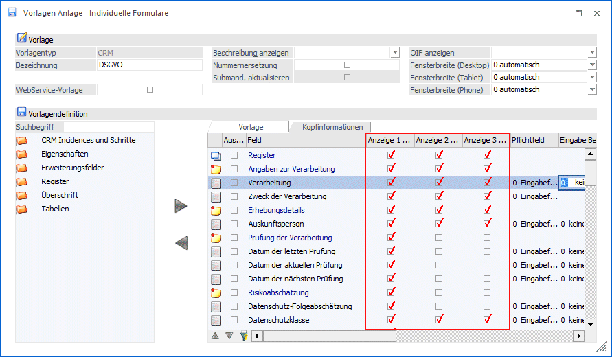
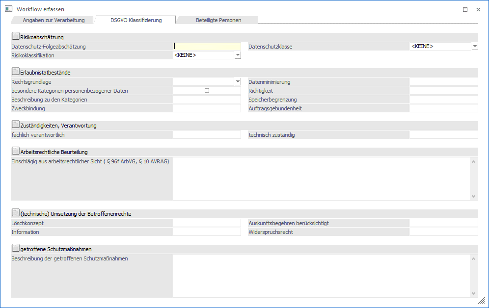
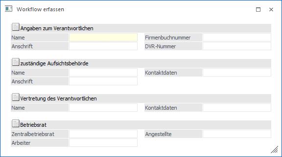
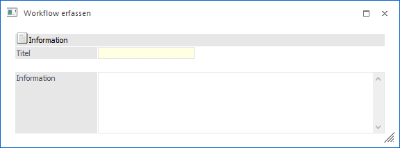

Pro Buch kann im PDMS eine Vorlage vergeben werden um Deckblätter zu erstellen. Da nicht jedes Kapitel und Subkapitel mit allen Feldern der Vorlage bestückt sein muss, gibt es in der "Vorlagen Anlage" die Möglichkeit 3 Ansichten zu generieren:
ü Anzeige 1
ü Anzeige 2
ü Anzeige 3
Mittels Checkboxen kann definiert werden, in welcher Ansicht ein Feld enthalten sein soll.

Beispiele zu den Ansichten
Ø Anzeige 1
Diese Anzeige wird in diesem Beispiel dazu verwendet, um Verarbeitungsverzeichnisse zu erfassen.

Ø Anzeige 2
Diese Anzeige wird in diesem Beispiel dazu verwendet, um das DSGVO Stammblatt zu erfassen.

Ø Anzeige 3
Diese Anzeige wird in diesem Beispiel dazu verwendet, um Notizen zu Uploads oder allgemeine kurze Informationen zu erfassen.

In der Vorlage sind alle Felder der 3 Ansichten enthalten. Nur über die Checkboxen wird gesteuert, in welcher Ansicht, welche Felder angezeigt werden sollen. Dadurch ist gewährleistet, dass die Filtermöglichkeiten im gesamten Buch gegeben sind.